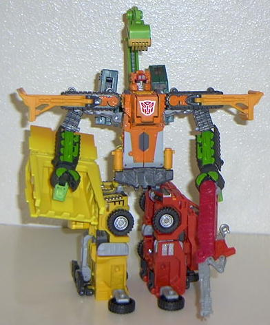
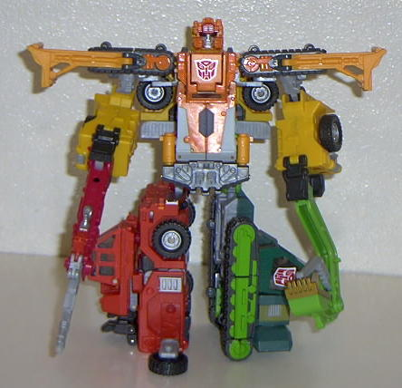
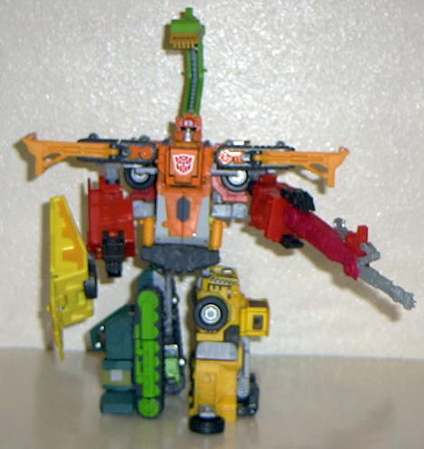

Allegiance
: Autobot
Size
: Gestalt (combination of four
Deluxes)
Difficulty of Transformation
: Very
Hard
Japanese Name
: Build King
Color Scheme
: Yellow, "cheese" yellow,
light black, light gray, silver light orange, transparent tinted plastic,
glittery orange, bright orange, dark gray, metallic light green, silver,
red, brick red, black, glittery dark blue-green, light green, gold, and
some light brown, shiny sky blue, neon orange, and bright red
Mold History
: Landfill was a completely
new gestalt created for Car Robots (which subsequently became Robots in
Disguise).
Rating
: 5.6 ("Heavy Load" and "Hightower"
modes); 5.5 ("Grimlock" mode)
Unlike most gestalts, Landfill has three different possible configurations. Wedge always forms the main body, shoulder plates, and head, but Grimlock , Heavy Load , and Hightower can be configured to individually be either one leg or both arms. I'll review all three different configurations, naming each one after the Landfill part that makes up the arms.

The "Grimlock" configuration
is the most different of Landfill's three configurations, and the most
symmetrical-looking, since the legs, made up of Heavy Load and Hightower,
are almost exactly the same shape. However, his legs are very bulky and
cumbersome, and you really can't move them at all without making it feel
like he's going to fall apart (which is does entirely too easily, by the
way). A couple small clips behind his main body. are all that holds Landfill
together. His legs are also very blatantly Heavy Load and Hightower's vehicle
mode. Not to mention his "feet" are just wheels. Bah. Although you can't
tell from the picture, Landfill's arms are not connected to his shoulder
plates, and just hang loosely from his main body behind them. They look
really cruddy from any angle except one similar to above, and he just doesn't
look solid. His arms also aren't strong enough to hold up his weapons,
so they just sink down to the ground. Um, his main body looks alright,
and his weapons and hands look pretty cool. That's about it for positives...


Landfill's "Heavy Load"
and "Hightower" configurations are nearly identical, since Heavy Load and
Hightower are similarly-constructed toys. Now, Landfill has better-looking
and sturdier arms. Even though they still don't connect to his shoulder
plates, and thus don't look solid unless viewed head-on, at least they
stay in one place easier. His hands look a little goofy, though, since
the palms are so big compared to the claws. His legs are also rather asymmetrical
and unbalanced in this mode- Grimlock turned on his side is not very convinced
as a foot, nooo. Otherwise, the same movement problems and positive that
applies to Landfill's "Grimlock" configuration apply to these ones as well.
Landfill is just, overall,
a very badly done gestalt. To be blunt, he's not worth the long amount
of time needed to put him together. If you're going to get the Build Team
components, get them for their rather good individual vehicle and robot
modes, not the gestalt.
No Stats
Review by Beastbot